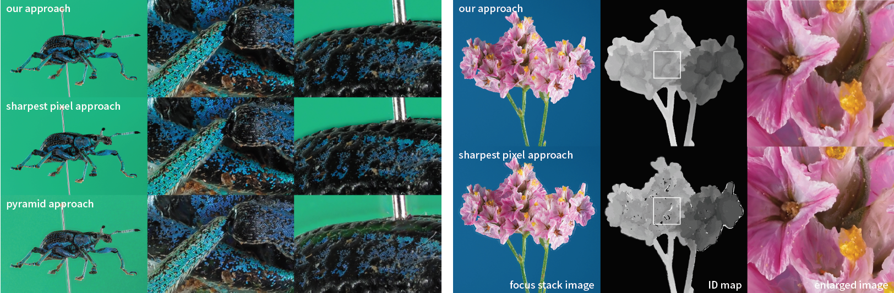

*Shibaura Institute of Technology, **Keio University

Abstract.
We present an approach to obtain high-quality focus-stacking im-ages. The key idea is to integrate the multi-view structure-from-motion (SfM) algorithm with the focus-stacking process; we carry out focus-bracketing shooting at multiple viewpoints, generate depth maps for all viewpoints by using the SfM algorithm, and compute focus stacking using the depth maps and local sharpness. By using the depth-maps, we successfully achieve focus-stacking results with less artifacts around object boundaries and without halo-artifacts, which was difficult to avoid by using the previous harvest pixel and pyramid approaches. To illustrate the feasibility of our approach, we performed focus stacking of small objects such as insects and flowers.